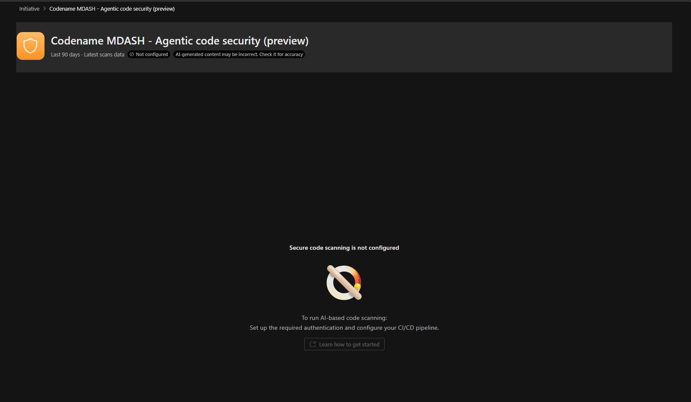

트러블슈팅
MDASH 설정·스캔 과정에서 자주 마주치는 증상과 해결 방법을 정리했습니다.
Foundry 리소스를 만들 권한이 없습니다
Foundry 프로젝트 생성 화면에서 프로젝트 생성 권한이 없다는 오류가 뜨는 경우, 구독 또는 리소스 그룹에서 리소스를 생성할 수 있는 역할이 없기 때문입니다.
- 공식 MDASH 문서 기준, Foundry 리소스 생성에는 구독/리소스 그룹의 Owner 등 리소스 생성 가능 역할이 필요합니다. (일반 Azure RBAC에서는 Contributor 이상이면 리소스 생성이 가능하지만, 조직의 구독 거버넌스 정책에 따라 다를 수 있습니다.)
- 권한이 없으면 구독 관리자 또는 사내 클라우드 관리 절차를 통해 해당 구독/리소스 그룹에 대한 역할을 요청하세요.
- Foundry 전용 역할(Foundry User/Owner/Account Owner 등)의 이름·범위는 Role-based access control for Microsoft Foundry를 참고하세요.
사전 요구사항·역할 이름 변경(Azure AI → Foundry) 안내는 Foundry 설정을 참고하세요.
Exposure Management(노출 관리) 메뉴가 보이지 않습니다
Entra ID의 Security Administrator 역할이 있음에도 Defender 포털 좌측 탐색 창에 Exposure Management 메뉴가 표시되지 않는 경우가 있습니다. Defender 통합 RBAC(URBAC)가 활성화된 테넌트에서는 해당 워크로드 접근이 Entra 전역 역할이 아닌 URBAC 권한으로 제어되기 때문입니다. 아래 항목을 확인하세요.
| 확인 항목 | 조치 |
|---|---|
| URBAC 커스텀 역할에 Exposure Management 권한 포함 여부 | Security posture > Posture management > Exposure Management(Read 이상)를 역할에 추가 |
| 데이터 소스 할당 여부 | 역할 할당 시 데이터 소스에 Microsoft Security Exposure Management 포함 확인 |
| 대상 사용자에게 역할 할당 여부 | Assign users and data sources 단계에서 해당 사용자/그룹이 할당되었는지 확인 |
| 권한 반영 지연 | 권한 변경 후 반영까지 시간이 걸릴 수 있으므로, 로그아웃 후 재로그인 또는 잠시 대기 후 재확인 |
커스텀 역할 생성·권한 설정 절차는 권한 설정 (RBAC)을 참고하세요.
Foundry 설정을 끝냈는데 MDASH 셋업(엔드포인트·키 입력) 창이 안 뜹니다
Foundry 리소스 생성·모델 배포를 마쳤어도, 온보딩 단계 — Project endpoint·API key 입력 → Validate → Save — 를 진행할 셋업 창(팝업)이 뜨지 않는 경우가 있습니다. 이는 대개 브라우저 팝업 동작 차이로 인한 문제입니다.
추가로 확인할 점:
- 진입점에서 재시작 — Exposure Management > Initiatives의 Codename MDASH 이니셔티브(또는 Overview > Agentic code security)로 다시 들어가 온보딩 플로우를 엽니다.
- 팝업 차단 해제 — 브라우저의 팝업 차단이 켜져 있으면 셋업 창이 막힐 수 있으니 해당 사이트(security.microsoft.com)의 팝업을 허용합니다.
- 권한·라이선스 — 온보딩에는 전역 관리자 또는 보안 관리자 역할과 적격 Defender XDR 라이선스가 필요합니다.
셋업 창이 뜨면 Foundry 설정에서 복사한 Project endpoint와 API key를 넣고 Validate → Save로 온보딩을 완료하세요.
Foundry 온보딩 시 Validate가 실패합니다
Foundry 리소스의 네트워킹이 Selected networks and private endpoints로 설정된 경우, MDASH 공인 IP가 차단되어 검증이 실패합니다. Microsoft Foundry 연결의 "MDASH 접근 허용" 절차로 필요한 IP를 허용하거나, 공용 접근을 All networks로 두세요. (이 설정은 Azure의 Foundry 리소스 방화벽이며, 사내망 방화벽과는 무관합니다.)
이니셔티브에 "Secure code scanning is not configured"만 뜨고 데이터가 없습니다

Not configured 배지가 뜨고, 스캔이 실행된 적이 없어 표출할 데이터가 없습니다.이 화면은 오류가 아니라 아직 스캔 경로가 구성되지 않은 정상 상태입니다. 이니셔티브 헤더에 Not configured 배지가 보이고, 본문에는 "Secure code scanning is not configured — To run AI-based code scanning: Set up the required authentication and configure your CI/CD pipeline."가 표시됩니다. AI 스캔 경로(인증 + 스캔 방법)를 아직 설정하지 않아 스캔이 한 번도 실행되지 않았고, 그래서 표시할 데이터가 없는 것입니다.
해결: 개요의 전체 설정 단계 4단계(AI 스캔 설정)를 완료해 스캔 경로를 하나 이상 구성하세요.
- GitHub 커넥터(원격, 권장)를 만들고 On-demand 스캔을 트리거, 또는
- Defender CLI를 설정하고 로컬/CI-CD 스캔을 실행.
스캔이 성공적으로 완료되면 이니셔티브 대시보드에 점수·발견 항목이 채워집니다(원격 커넥터는 활성화 후 최대 1시간 뒤 스캔 가능).
스캔을 실행했는데 이니셔티브에 결과가 안 보입니다
이니셔티브 페이지는 데이터 범위·신선도 규칙이 있습니다. 다음을 확인하세요.
- 90일 가시성 창 — 최근 90일 내 완료된 스캔만 표시됩니다. 오래된 스캔은 자동 소멸합니다.
- 성공한 스캔만 표시 — Running·Failed·부분·취소된 스캔은 표시되지 않습니다.
- 원격 스캔 지연 — GitHub 커넥터는 활성화 후 최대 1시간 뒤부터 On-demand 스캔이 가능합니다.
- 대기 큐 정리 — 제출 후 72시간 내 시작되지 않은 대기 스캔은 자동 정리되어 실행되지 않을 수 있습니다.
세부 규칙은 Defender 포털 결과 검토의 "데이터 범위 및 신선도"를 참고하세요.